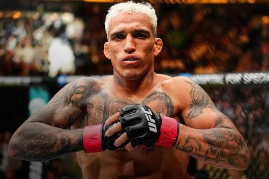
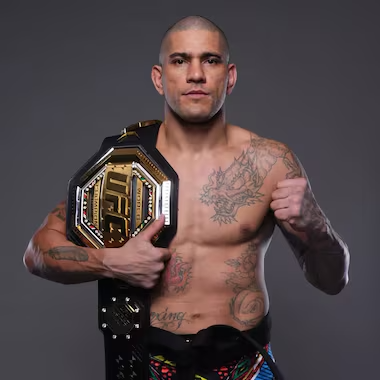
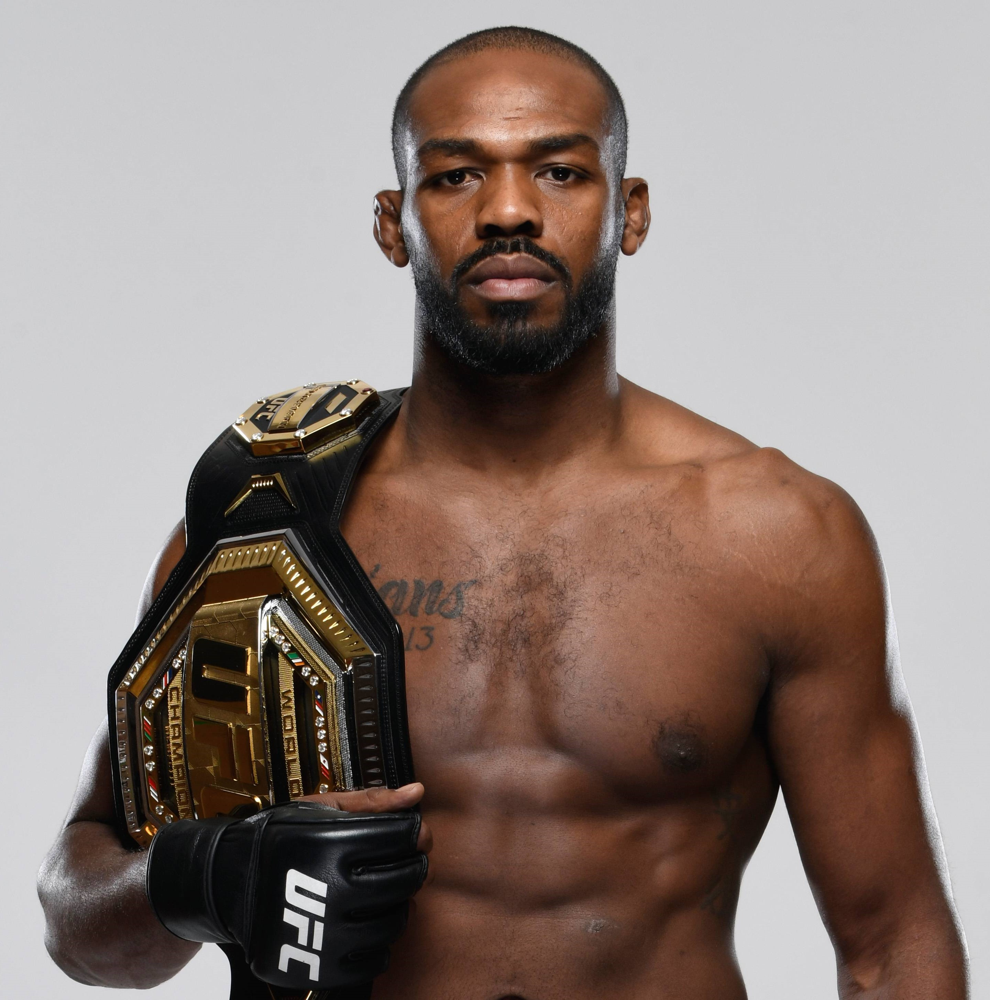
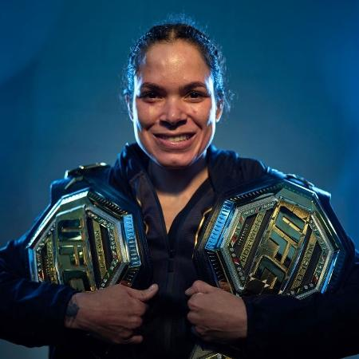
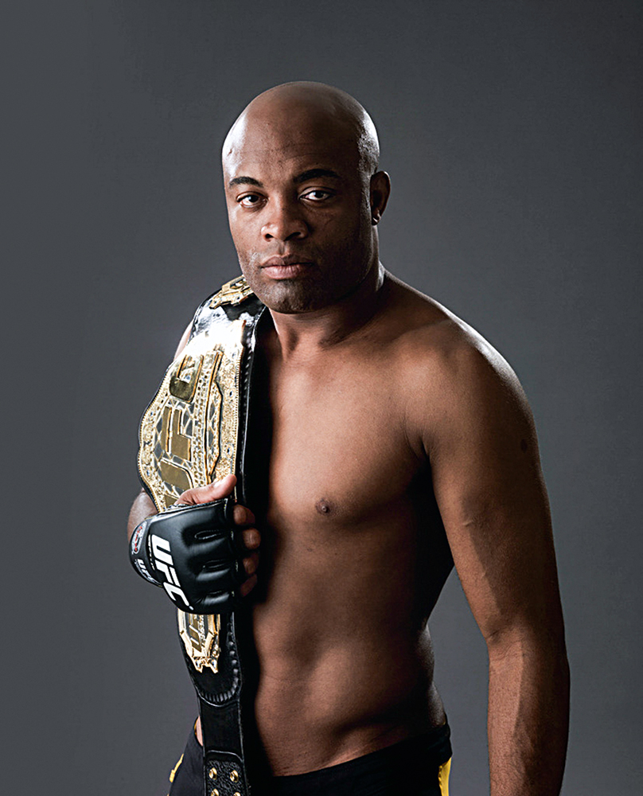

Notícias, enquetes e desafios para quem vive
o mundo das lutas.

LUTADORES
Conheça alguns atletas que marcaram o MMA

ALEX PEREIRA
Peso meio-pesado

JON JONES
Peso pesado

AMANDA NUNES
Peso galo

ANDERSON SILVA
Peso médio
/*foto de mim no judô*/
Eu sempre gostei de lutar e entrei no mundo das artes marciais pela primeira vez quando tinha 4 anos. Comecei a fazer taekwondo, mas parei aos 5 anos. Quando fiz 6 anos, troquei de escola e, nessa nova escola, tinha aulas de judô. Então, pedi para minha mãe me matricular nas aulas. Lutei durante 5 anos e parei na faixa azul-escura.
Dos meus 11 aos 16 anos, fiquei sem praticar nenhuma arte marcial. Também era época de pandemia, então nem fui atrás de fazer alguma coisa.
Em julho de 2024, levei meu irmão para fazer uma aula experimental de karatê. Até então, apenas ele faria a aula, mas o sensei do dojô arrumou um quimono para mim e me chamou para participar. Acabei gostando muito e decidi continuar fazendo as aulas.
Passou um tempo e comecei a me interessar por lutas em geral. Comecei a acompanhar o UFC e foi ali que descobri que era apaixonado por artes marciais.
No começo de 2025, eu e um grupo de amigos da escola precisávamos desenvolver um projeto ao longo do ano e decidimos falar sobre a importância de praticar uma arte marcial. Então, eu e outro amigo, que lutava jiu-jítsu, começamos a gravar vídeos para o TikTok ensinando defesa pessoal. Gravamos por um curto período, mas foi suficiente para aprendermos coisas sobre a arte marcial um do outro.
Agora, na SPTech, vou ter a oportunidade de falar sobre a minha paixão.